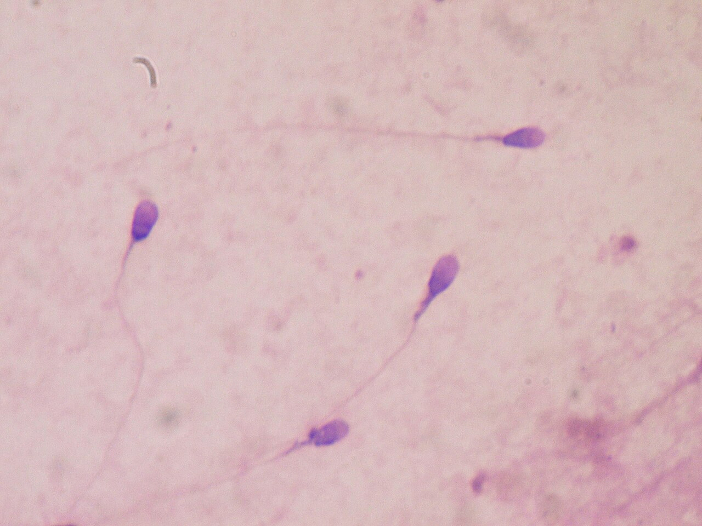

MW_SXH_07 — Sinh sản nam: chú ý sức khỏe, thuốc và đánh giá phù hợp

Stained human sperm in a clinical laboratory, as described by the image author. Bobjgalindo · CC BY-SA 4.0 · Bản thu nhỏ; giữ nguyên nội dung.

Đúng mẫu người, không lấy tinh trùng động vật hay ảnh minh họa thụ tinh làm bằng chứng. Ảnh không cung cấp kết quả tinh dịch đồ hoặc dự đoán có thai cho người đọc.

A stained human-sperm micrograph, identified by its author, illustrates a specimen examined in a clinical laboratory. Bobjgalindo · CC BY-SA 4.0 · Bản thu nhỏ; giữ nguyên nội dung.
Đúng mẫu người và loại hình xét nghiệm. Không gán nồng độ, độ di động, chẩn đoán hay xác suất có thai từ một ảnh tĩnh.